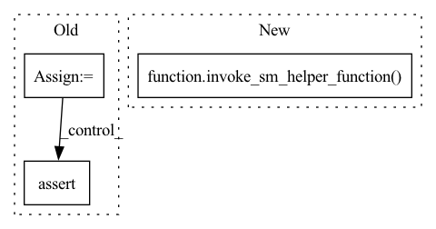

Pattern ID :19740

Before Change
estimator.fit(job_name=unique_name_from_base("test-tf-horovod"))
model_data_source = sagemaker.local.data.get_data_source_instance(
estimator.model_data, sagemaker_session)
for filename in model_data_source.get_file_list():
assert os.path.basename(filename) == "model.tar.gz"
@pytest.mark.integration("horovod")
After Change
instance_type,
tmpdir,
framework_version):
invoke_sm_helper_function(ecr_image, sagemaker_regions, _test_distributed_training_horovod_function,
instance_type, tmpdir, framework_version)
def _test_distributed_training_horovod_function(ecr_image, sagemaker_session, instance_type, tmpdir, framework_version):
mpi_options = "-verbose -x orte_base_help_aggregate=0"
In pattern: SUPERPATTERN
Frequency: 3
Non-data size: 3
Instances
Fragment ID: 64407922
Project Name: aws/deep-learning-containers
Commit Name: 6e6f05c2bcaee3f8d5469eafb57ca3e6e820ac4a
Time: 2021-10-19
Author: 34056697+SergTogul@users.noreply.github.com
File Name: test/sagemaker_tests/tensorflow/tensorflow2_training/integration/sagemaker/test_horovod.py
M Class Name: AnonimousClass
N Class Name: AnonimousClass
M Method Name: test_distributed_training_horovod(5)
N Method Name: test_distributed_training_horovod(5)
M Parent Class:
N Parent Class:
M File Name: test/sagemaker_tests/tensorflow/tensorflow2_training/integration/sagemaker/test_horovod.py
N File Name: test/sagemaker_tests/tensorflow/tensorflow2_training/integration/sagemaker/test_horovod.py
M Start Line: 32
M End Line: 58
N Start Line: 31
N End Line: 37
'>
Before Change
framework_version=framework_version,
sagemaker_session=sagemaker_session)
endpoint_name = utils.unique_name_from_base("test-mxnet-gluonnlp")
with timeout.timeout_and_delete_endpoint_by_name(endpoint_name, sagemaker_session):
predictor = model.deploy(1, instance_type, endpoint_name=endpoint_name)
output = predictor.predict(["Positive sentiment", "Negative sentiment"])
assert [1, 0] == output
After Change
@pytest.mark.skip_eia_containers
@pytest.mark.skip_neuron_containers
def test_gluonnlp(ecr_image, sagemaker_regions, instance_type, framework_version):
invoke_sm_helper_function(ecr_image, sagemaker_regions, _test_gluonnlp_function,
instance_type, framework_version)
def _test_gluonnlp_function(ecr_image, sagemaker_session, instance_type, framework_version):
import urllib.request
'>
Fragment ID: 64407920
Project Name: aws/deep-learning-containers
Commit Name: 6e6f05c2bcaee3f8d5469eafb57ca3e6e820ac4a
Time: 2021-10-19
Author: 34056697+SergTogul@users.noreply.github.com
File Name: test/sagemaker_tests/mxnet/inference/integration/sagemaker/test_gluonnlp.py
M Class Name: AnonimousClass
N Class Name: AnonimousClass
M Method Name: test_gluonnlp(4)
N Method Name: test_gluonnlp(4)
M Parent Class:
N Parent Class:
M File Name: test/sagemaker_tests/mxnet/inference/integration/sagemaker/test_gluonnlp.py
N File Name: test/sagemaker_tests/mxnet/inference/integration/sagemaker/test_gluonnlp.py
M Start Line: 34
M End Line: 56
N Start Line: 35
N End Line: 37
'>
Before Change
image_uri=ecr_image,
sagemaker_session=sagemaker_session)
endpoint_name = utils.unique_name_from_base("test-mxnet-serving")
with timeout.timeout_and_delete_endpoint_by_name(endpoint_name, sagemaker_session):
predictor = model.deploy(1, instance_type, endpoint_name=endpoint_name)
output = predictor.predict([[1, 2]])
assert [[4.9999918937683105]] == output
After Change
@pytest.mark.model("linear_regression")
@pytest.mark.skip_neuron_containers
def test_hosting(ecr_image, sagemaker_regions, instance_type, framework_version):
invoke_sm_helper_function(ecr_image, sagemaker_regions, _test_hosting_function,
instance_type, framework_version)
def _test_hosting_function(ecr_image, sagemaker_session, instance_type, framework_version):
prefix = "mxnet-serving/default-handlers"
'>
Fragment ID: 64407919
Project Name: aws/deep-learning-containers
Commit Name: 6e6f05c2bcaee3f8d5469eafb57ca3e6e820ac4a
Time: 2021-10-19
Author: 34056697+SergTogul@users.noreply.github.com
File Name: test/sagemaker_tests/mxnet/inference/integration/sagemaker/test_hosting.py
M Class Name: AnonimousClass
N Class Name: AnonimousClass
M Method Name: test_hosting(4)
N Method Name: test_hosting(4)
M Parent Class:
N Parent Class:
M File Name: test/sagemaker_tests/mxnet/inference/integration/sagemaker/test_hosting.py
N File Name: test/sagemaker_tests/mxnet/inference/integration/sagemaker/test_hosting.py
M Start Line: 33
M End Line: 48
N Start Line: 34
N End Line: 36